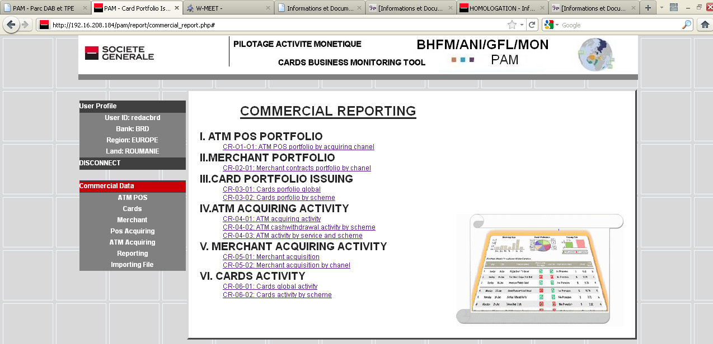
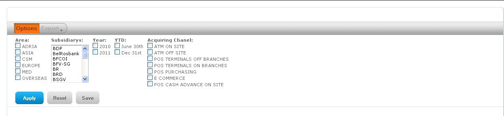
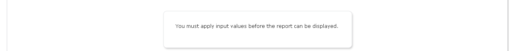
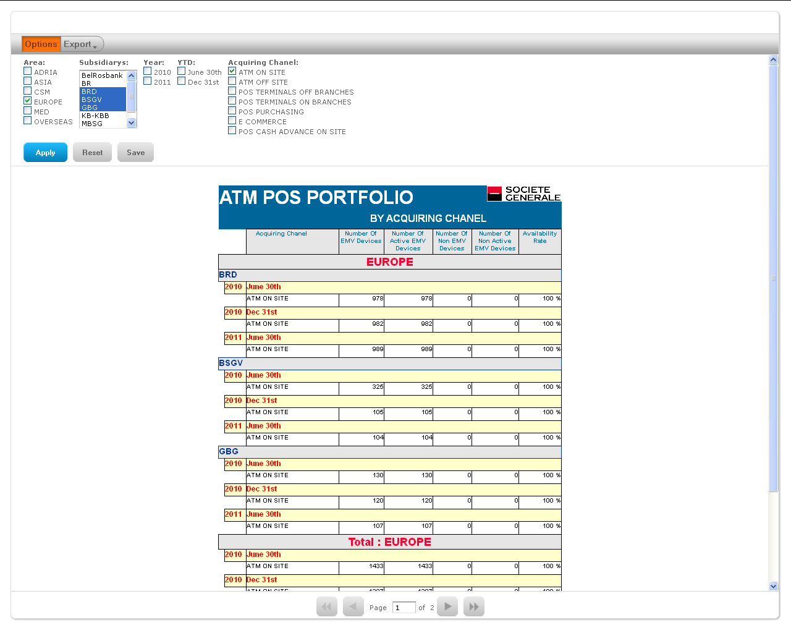
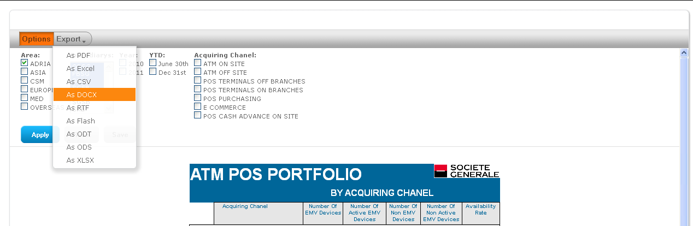

Table of contents Close window
The reports are accessible by clicking on "Reporting" in the menu.

All the reports, tables and graphics generated by the program are available to all users.

The first screen is empty. In order to generate and display a report, users have to define input values by selecting area, subsidiaries, year, semester, …. etc. and clik on Apply button.

If no selections are defined, all the data within the database are used to build up the table and the graphics.
In that case the selection is: Europe / BRD, BSGV and GBG / ATM on site.

Each BHFM subsidiary can view the numbers, tables and graphics related to cards business activity performed by others subsidiaries.
Users can export reports as PDF, XLS, DOC, etc. files to be reuse in document or new calculation by clicking on this menu.

Currently, PAM program presents a list of reports in order to show what kind of reports the tool is able to generate.
Users can sent to BHFM comments about these existing reports to improve quality and relevance. Users can also send to BHFM requirements regarding new reports more useful or accurate to be added in the list. BHFM will collect all the demands and will develop the most useful one.